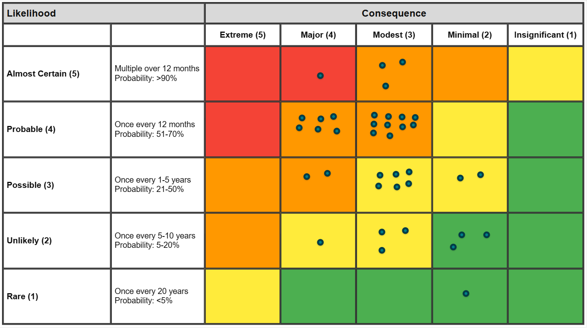

Higher education IT & security
Governance updates and cyber reviews supported by structured, defensible reporting.
Power BI · Risk Visualisation
Decision-ready risk visibility for university leadership and enterprise governance — built natively on Power BI.
Who it is for
Built for IT directors, CISOs, compliance officers, and enterprise risk teams who need to communicate exposure to leadership with clarity and confidence.
Governance updates and cyber reviews supported by structured, defensible reporting.
Consolidated visibility across siloed registers for prioritisation and executive briefings.
Why it matters
Most institutions already collect risk data. The gap is presenting it in a form that supports timely, accountable decisions.
Cyber, compliance, and operational risk span teams and competing priorities.
Tabular registers rarely surface concentration, severity, or relative urgency.
Executives need a clear view of exposure without working through technical detail first.
Core product
A Power BI-native risk matrix that maps likelihood and consequence in a governance-ready format — familiar inside Microsoft reporting, structured for executive review.

Capabilities
Map exposure by likelihood and consequence so concentration is obvious at a glance.
A standard scoring frame for what to escalate, monitor, or accept.
One-screen views for steering, audit, and governance forums.
Lives inside the Power BI environment institutions already trust.
Optional enhancement
Once risks are visible in the matrix, a separate agents layer can support summary, prioritisation, and recommendation drafting. It is an enhancement to the Power BI experience, not a replacement.
Next step
Help your institution communicate risk with greater confidence across leadership and governance forums.